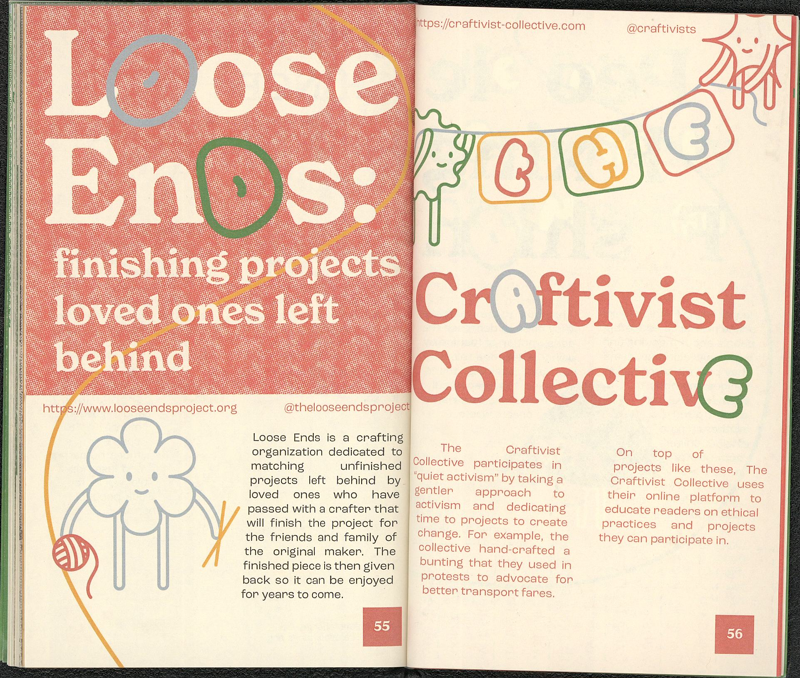

.ORG was a collaborative project with fellow design students. The goal of the book was to bring awareness to various organizations that the general public may not be knowledgable of by doing our own research and putting it in a book for them.


We felt there was a conversation around access with this book, and we decided to approach this visually by making the book fun to read. In our opinion, research materials were made to be utilitarian, but we wanted to challenge this by using colorful visuals and bubbly text, creating a friendly and approachable atmosphere in the book.